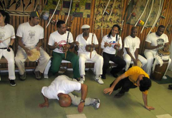
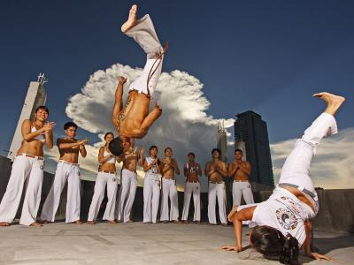

Capoeira Sinopse
A capoeira é uma expressão cultural brasileira que compreende os elementos: arte-marcial, esporte, cultura popular, dança e música. Ela constrói relações de sociabilidade e familiaridade entre mestres e discípulos, sendo difundida de modo oral e gestual nas ruas e academias. A capoeira tem origem nos povos escravizados e se difundiu por todo o Brasil. Hoje é considerada um dos maiores símbolos da cultura brasileira.
O surgimento da expressão foi protagonizado pelos negros escravizados como forma de resistência à opressão dos senhores e de preservação de suas identidades culturais. A roda, os instrumentos musicais, o canto e os movimentos corporais compõem a performance em capoeira. Por meio das contribuições de mestres da capoeira, como Bimba e Pastinha, a prática é dividida em duas principais categorias: Angola e regional. Enquanto a primeira, mais tradicional, busca resgatar a herança africana, a segunda recebe influências de artes marciais e ocupa os espaços das academias.
Origem e história da Capoeira
A origem da capoeira está associada ao contexto da escravidão no Brasil, e os primeiros registros históricos são do século XVIII. Os negros africanos escravizados desenvolveram a prática como forma de autodefesa e resistência à opressão dos senhores.
Pesquisadores apontam que o início da expressão se deu no período de formação dos quilombos, comunidades de escravizados que fugiam das violências a que eram submetidos
O termo capoeira significa “o mato que nasce depois do desmatamento”. O nome está relacionado à forma como se dava a prática em seu início, realizada nas regiões de mato. O surgimento da expressão ocorreu na zona rural, e somente depois ela chegou aos espaços urbanos.
Além da intenção de desenvolver algo como defesa corporal, a capoeira foi criada como mecanismo de resistência cultural, em um processo de manutenção da identidade dos povos africanos que foram submetidos à escravidão.
A capoeira era considerada proibida, pois não era bem-vista pelos senhores. Nesse sentido, as práticas no mato eram formas de manter a expressão viva sem que os proprietários das fazendas descobrissem.
As cidades de Salvador, Rio de Janeiro e Recife foram os principais centros urbanos que se tornaram palco da difusão da capoeira.
Tipos de Capoeira
Existem dois timpos, sendo Capoeira Angola e Capoeira Regional
Capoeira Angola
A capoeira Angola é uma modalidade da prática que objetiva resgatar a herança africana. Ela foi caracterizada por meio dos trabalhos de mestres baianos como Pastinha.
Apesar de ser expressa tal como a capoeira era praticada originalmente, ela foi reconhecida enquanto um tipo específico assim que mestre Bimba criou a regional.
Com isso, enquanto uma atua na preservação de elementos tradicionais das identidades africanas, a outra se associa à sistematização do ensino da capoeira e sua relação com as artes marciais.
A forma de jogar esse tipo de capoeira é mais lenta e feita próximo ao chão. A música nesse tipo também é caracterizada por toques lentos e originários da prática da capoeira.
Capoeira Regional
A capoeira regional foi criada por Mestre Bimba na Bahia. Essa modalidade começou a ser desenvolvida em 1918.
Foi por meio da capoeira regional que a prática corporal da capoeira passou a ocupar outros espaços, como as academias, e ter novas percepções sociais além da marginalização.
Os movimentos desse tipo são mais acrobáticos, realizados em pé e com a definição de regras específicas. Isto é, passa a ser consolidado um processo de “esportivização” da capoeira com o desenvolvimento desse estilo.
Então é isso! Espero que tenha gostado do nosso artigo com essa curiosidade sobre a capoeira.